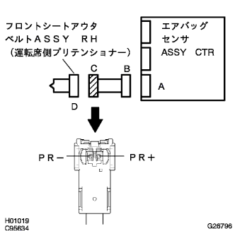
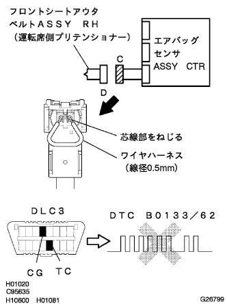
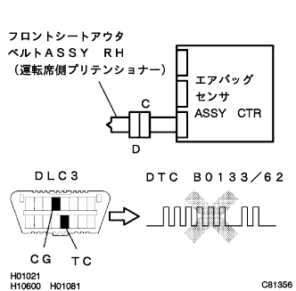

DTC B0133/62 Front Priten Shonor RH Icely Circuit (+B Short Dismanagement) |
| DTC No. | DTC detection item | Place of problem |
|---|---|---|
| B0133/62 |
|
|
reference)reference)| Step 1 | Front Priten Shonor RH ignition circuit inspection (Airbag Sensor ASSY CTR-Front Sheet Out Belt ASSY RH) |
|  |
Separate the battery's minihana stormy and wait for 90 seconds.
The connector is separated from the airbag sensor ASSY CTR and the front Preten Shonor RH.
Connect the battery minor stormy and turn on the IG switch.
Use SST (Toyota Electrical Tester) to check the PR+of the connector C and the voltage between the PR-terminal and the body earth.
|
| ||||
| OK | |
| Step 2 | Airbag sensor ASSY inspection |
|  |
Set the IG switch to OFF (Lock).
Separate the battery's minihana stormy and wait for 90 seconds.
Connect the connector to the airbag sensor Assembly CTR.
Use a wire harness (wire diameter 0.5 mm) to shorten the PR+and PR-terminals of the connector C.
Connect the battery's minihana stormy, turn on the IG switch and wait for 60 seconds.
Use the SST to delete the diag code, and then check the diag code again.
For code reading with Warnin Grand Lamp
For code reading by Tascan
|
| ||||
| OK | |
| Step 3 | Front Priten Shonor RH ignition system inspection |
|  |
Set the IG switch to OFF (Lock).
Separate the battery's minihana stormy and wait for 90 seconds.
Contain the short circuit between the PR+and the PR-terminals of the connector C, and connect the connector to the front printen Shonor RH.
Connect the battery's minihana stormy, turn on the IG switch and wait for 60 seconds.
Use the SST to delete the diag code, and then check the diag code again.
For code reading with Warnin Grand Lamp
For code reading by Tascan
|
| ||||
| OK | ||
| ||